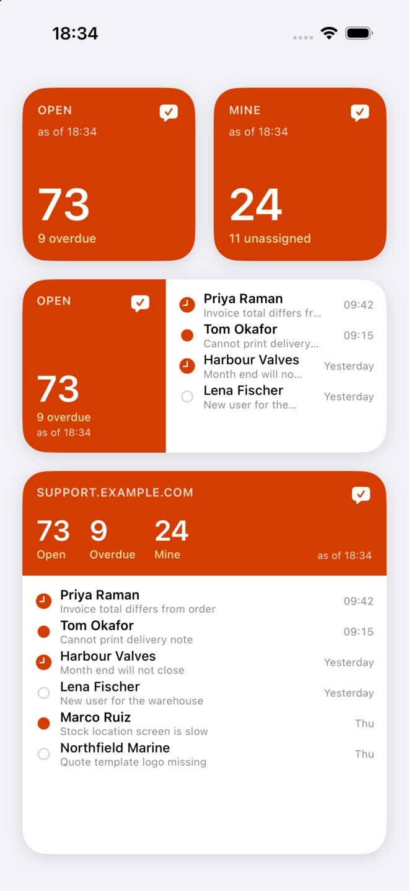
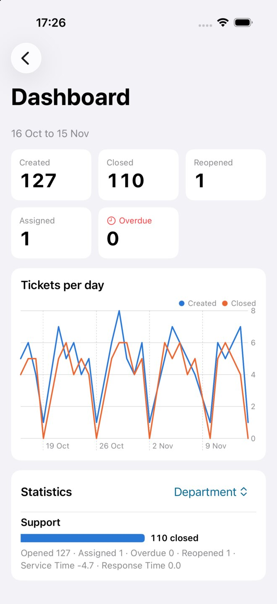

Your helpdesk, cleared from your pocket.
Clear Desk is an agent app for osTicket on iPhone and iPad. Read tickets, reply, leave a note, assign, and resolve.
It signs in to your own osTicket the way you do in a browser. No plugin, and nothing on your server changes.
For iPhone, iPad and iPhone Duo. Not on the App Store yet.

What it does
Queues and tickets
Every queue with its count. Sort by any order your helpdesk offers. Search by number, email or keyword.
Reply and note
Answer the customer, or leave an internal note for your team.
Resolve, clearly
Choose whether the customer gets an email or not. The screen says which, before you confirm.
Assign and status
Assign to an agent or team. Close, resolve and reopen.
Dashboard
Tickets created and closed per day, and figures by department, topic and agent, for a week up to a quarter.
Widgets
Open, overdue and assigned counts and your latest tickets, on the Home Screen and Lock Screen.
Offline reading
Tickets you have opened, and the first few in each list, can be read with no connection.
Two-factor sign-in
Works with osTicket's emailed verification codes.
Locked
Face ID, Touch ID or passcode. Your password stays in the Keychain on your device.
Tested on every release it supports
Each feature is tested automatically against real osTicket installs before an update ships.
Tested: osTicket 1.17 and 1.17.2 to 1.17.8, and 1.18 to 1.18.4.
Versions not listed, including 1.16 and earlier, may work but are not tested. You need a self-hosted osTicket reachable over https, and an agent account on it.

Limitations
Clear Desk works through the agent panel's own pages. That keeps your server untouched, and it sets some limits you should know before you download.
No instant notifications
New tickets are found by periodic background checks, typically 15 to 30 minutes behind. Widgets show the last saved figures.
Offline is read-only
Replying, resolving, assigning, search and the dashboard need a connection.
Not included
Creating tickets, opening or sending attachments, formatted message bodies, canned responses, tasks, merging, and advanced or saved searches.
Sign-in
Password, with or without an emailed code. Single sign-on and authenticator-app codes are not supported.
Self-hosted only
The hosted osTicket service is not supported.
Upgrades can break things
A new osTicket release can change the agent panel, and a feature may stop working until the app is updated.
Price
Reading your tickets is free: sign in, browse, search and see the dashboard. Try it first to check it works with your helpdesk.
Clear Desk Full adds replying, notes, resolving, assigning, widgets and offline reading. It is a subscription: £2.99 a month or £19.99 a year in the UK, with equivalent prices elsewhere.
Clear Desk is an independent app. It is not affiliated with, endorsed by or supported by Enhancesoft or the osTicket project. osTicket is a trademark of Enhancesoft LLC.